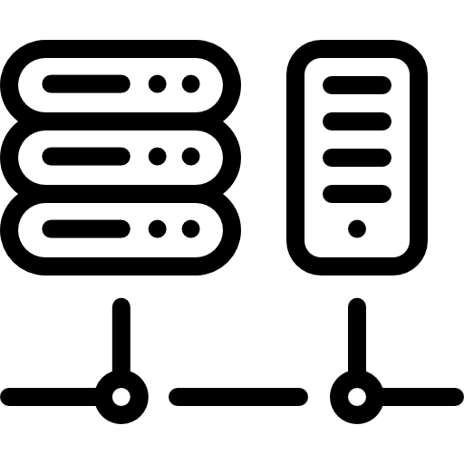

1. Introducción
En esta unidad de trabajo se estudia la configuración y mejora de la seguridad de un red mediante la implantación de redes virtuales (VLAN) que permitirán una buena segmentación de la red.
Existe equipamiento como la distribución personalizada de FreeBSD para su uso como Router y Firewall, en concreto, la versión comunidad de Pfsense así como Mikrotik para su uso como Router y Firewall que nos pueden servir para esta unidad de trabajo para el equipamiento de enrutado.
Estos dos equipos, se pueden instalar tanto en equipos físicos como virtualizados y permitirá segregar las redes y aplicar VLANs.

Caso práctico
En un centro educativo, hace unos años se sufrió un ataque de confidencialidad realizado por un alumn@ mediante distintas técnicas MITM, y que consiguió robar las credenciales de acceso a Moodle de varios compañeros y profesores en el aula. De esta forma pudo acceder a trabajos de otros alumnos y a exámenes y ejercicios resueltos del profesor.
El ataque sólo tuvo éxito en el aula, gracias a que el diseño de la red estaba segmentado por lo que el ataque no podía salir del aula y llegar al resto del centro. El ataque pudo monitorizarse y detectarse y con estos datos poder expedientar al alumno.
Casos como éste seguro que están sucediendo continuamente y no son detectados.
Obra publicada con Licencia Creative Commons Reconocimiento No comercial Compartir igual 4.0